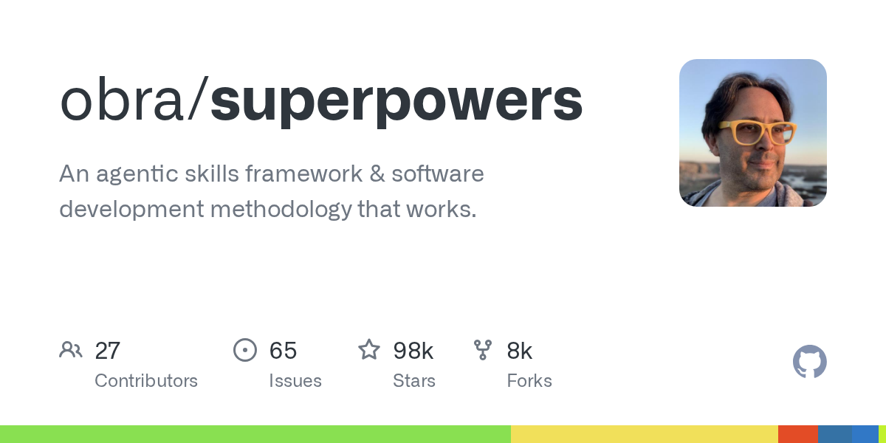
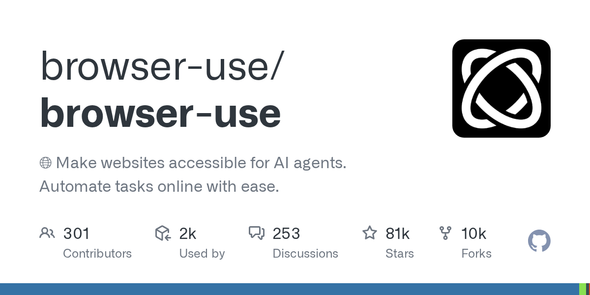
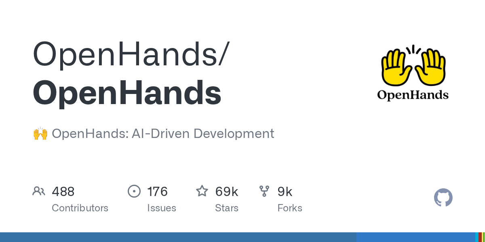

5个Agent Skills新星速报！TDD方法论、Browser自动化、Deep Research等热门技能
Neo整理
Agent Skills 是 AI 编程助手（Claude Code、Codex、Gemini CLI 等）的可复用能力模块。今天我扫描了 SkillsMP 和 GitHub 热门仓库，筛选出来自知名开源项目、实用价值高的热门 Skills。
本期介绍 5 个精选 Skills，涵盖 TDD 开发方法论、浏览器自动化、代码审查、深度研究和 iOS 26 设计系统等领域。
Test-Driven Development：铁律级 TDD 方法论
TDD Skill 来自 Jesse Vincent 的 Superpowers 框架——一个在 Agent 编程时代影响力极大的方法论项目。这不是教条式的 TDD 入门，而是为 AI Agent 量身定制的「铁律」：没有失败测试，就不写生产代码。
💡 核心价值：让 AI Agent 遵循严格的 Red-Green-Refactor 循环。写了代码没有测试？删掉重来。不是「参考」，不是「适配」，是真正的删除。
铁律要点：
- Red-Green-Refactor — 先写失败测试 → 最小化实现 → 重构清理
- 无例外执行 — 新功能、Bug 修复、重构全部适用
- 反模式检测 — 附带
testing-anti-patterns.md文档，避免常见陷阱 - Agent 友好 — 专为 AI 编程助手设计的流程图和决策树
# 铁律
NO PRODUCTION CODE WITHOUT A FAILING TEST FIRST
# Red-Green-Refactor 循环
1. RED → 写一个失败的测试
2. 验证 → 确认它正确地失败了
3. GREEN → 写最小化代码让测试通过
4. 验证 → 确认所有测试都绿了
5. REFACTOR → 清理代码
# 例外（需要人类确认）
- 一次性原型
- 生成的代码
- 配置文件
Browser Use：AI Agent 的浏览器自动化 CLI
Browser Use Skill 来自同名的热门开源项目，提供了一套完整的浏览器自动化 CLI。通过持久化浏览器会话，AI Agent 可以像人一样浏览网页、填写表单、截图和提取数据。
💡 核心价值：不需要复杂的 Playwright/Selenium 配置。一行命令打开 URL，用索引号点击元素。支持 Chromium（无头）、真实 Chrome（带登录态）和云端浏览器三种模式。
核心工作流：
- Navigate —
browser-use open <url>打开页面 - Inspect —
browser-use state获取可点击元素及索引 - Interact —
browser-use click 5、browser-use input 3 "text" - Verify —
browser-use screenshot path.png截图确认
# 三种浏览器模式
browser-use --browser chromium open <url> # 默认无头
browser-use --browser real --profile "Default" open <url> # 带登录态
browser-use --browser remote open <url> # 云端浏览器
# 交互命令
browser-use state # 获取页面元素
browser-use click <index> # 点击元素
browser-use input <index> "text" # 输入文本
browser-use keys "Enter" # 发送按键
browser-use screenshot out.png # 截图
Code Review：OpenHands 的自动化代码审查
Code Review Skill 来自 OpenHands（前身 OpenDevin）——一个顶级的 AI 软件工程 Agent 平台。这个 Skill 让 Agent 扮演资深代码审查员，从风格、可读性到安全漏洞进行全面审查。
💡 核心价值：结构化审查输出，精确到行号。覆盖三大场景：风格和格式、清晰度和可读性、安全和常见 Bug 模式。只反馈，不修改代码。
审查场景：
- 风格和格式 — 缩进、命名规范、未使用的导入、PEP8/Google Style
- 清晰度和可读性 — 嵌套过深、职责过多、命名不清晰
- 安全审查 — SQL 注入、硬编码密钥、竞态条件、空指针
# 触发方式
/codereview
# 输出格式
[src/utils.py, Line 42] 🔧 未使用的导入：os 模块未被使用，建议移除
[src/database.py, Lines 78–85] 🔍 可读性：嵌套 if-else 过深，建议重构
[src/auth.py, Line 102] 🔐 安全风险：SQL 注入，建议使用参数化查询
# 特点
- 只读审查，不修改代码
- 精确到行号的反馈
- 支持所有主流编程语言
Deep Research：多源深度研究与引用报告
Deep Research Skill 来自 Everything Claude Code（ECC）——一个收录了 100+ 高质量 Skills 的综合仓库。这个 Skill 利用 Firecrawl 和 Exa MCP 工具进行多源搜索，自动生成带引用的深度研究报告。
💡 核心价值：将「搜索 → 阅读 → 总结 → 引用」的研究流程自动化。每个子问题多源搜索，去重后提取关键信息，最终输出带编号引用的结构化报告。
研究流程：
- 理解目标 — 1-2 个澄清问题（或跳过用默认值）
- 规划研究 — 将主题拆分为 3-5 个子问题
- 多源搜索 — Firecrawl + Exa 双引擎搜索
- 综合报告 — 带编号引用的 Markdown 报告
# 触发关键词
"研究一下..." / "深度调研" / "调查" / "当前状态是什么"
# MCP 工具
firecrawl_search(query, limit: 8) # Firecrawl 搜索
web_search_exa(query, numResults: 8) # Exa 搜索
web_search_advanced_exa(query, startPublishedDate: "2025-01-01")
# 输出示例
## AI 在医疗中的影响
### 1. 主要应用领域
AI 正在医学影像诊断中取得突破性进展 [1][2]...
## 引用
[1] Nature Medicine, 2026-02-15
[2] WHO Technical Report, 2025-12-01
Liquid Glass Design：iOS 26 玻璃设计系统
Liquid Glass Design Skill 同样来自 ECC 仓库，是紧跟 Apple 最新设计语言的实战指南。iOS 26 引入的 Liquid Glass 是一种动态材质效果——模糊背景、反射颜色和光线、响应触控交互。这个 Skill 覆盖 SwiftUI、UIKit 和 WidgetKit。
💡 核心价值：一站式掌握 iOS 26 的 .glassEffect() API。从基础用法到容器性能优化、从按钮样式到导航栏适配，开箱即用。
核心 API：
- .glassEffect() — 基础玻璃效果，默认胶囊形状
- .tint(Color) — 添加颜色色调增强可见性
- .interactive() — 响应触控和指针交互
- GlassEffectContainer — 多元素容器，性能优化
- .buttonStyle(.glass) — 玻璃按钮样式
# SwiftUI 基础用法
Text("Hello, World!")
.padding()
.glassEffect()
# 自定义形状和色调
Text("Hello, World!")
.padding()
.glassEffect(.regular.tint(.orange).interactive(),
in: .rect(cornerRadius: 16.0))
# 玻璃按钮
Button("Click Me") { /* action */ }
.buttonStyle(.glass)
Button("Important") { /* action */ }
.buttonStyle(.glassProminent)总结
今天介绍的 5 个 Skills 来自 4 个知名开源项目（Superpowers、Browser Use、OpenHands、Everything Claude Code），展现了 Agent Skills 生态的多样性：
- 方法论型 — TDD（obra/superpowers）让 Agent 遵循严格开发流程
- 工具集成型 — Browser Use 让 Agent 操控浏览器
- 质量保证型 — Code Review（OpenHands）自动化代码审查
- 研究分析型 — Deep Research 多源搜索 + 引用报告
- 前沿设计型 — Liquid Glass 紧跟 iOS 26 最新 API
值得关注的趋势：越来越多的 Skills 不只是「如何写代码」，而是「如何做好整个开发流程」——从研究、设计到测试、审查。Agent 正在从「代码补全」进化为「全栈开发伙伴」。